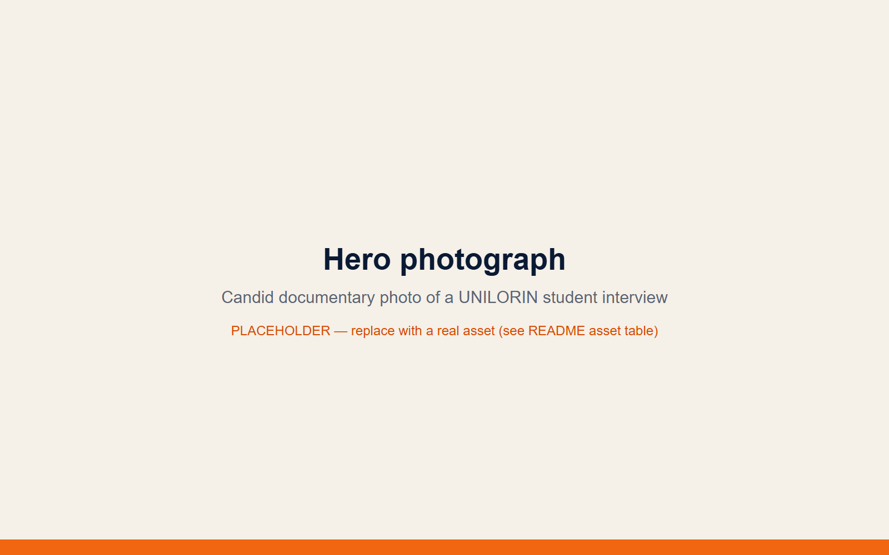
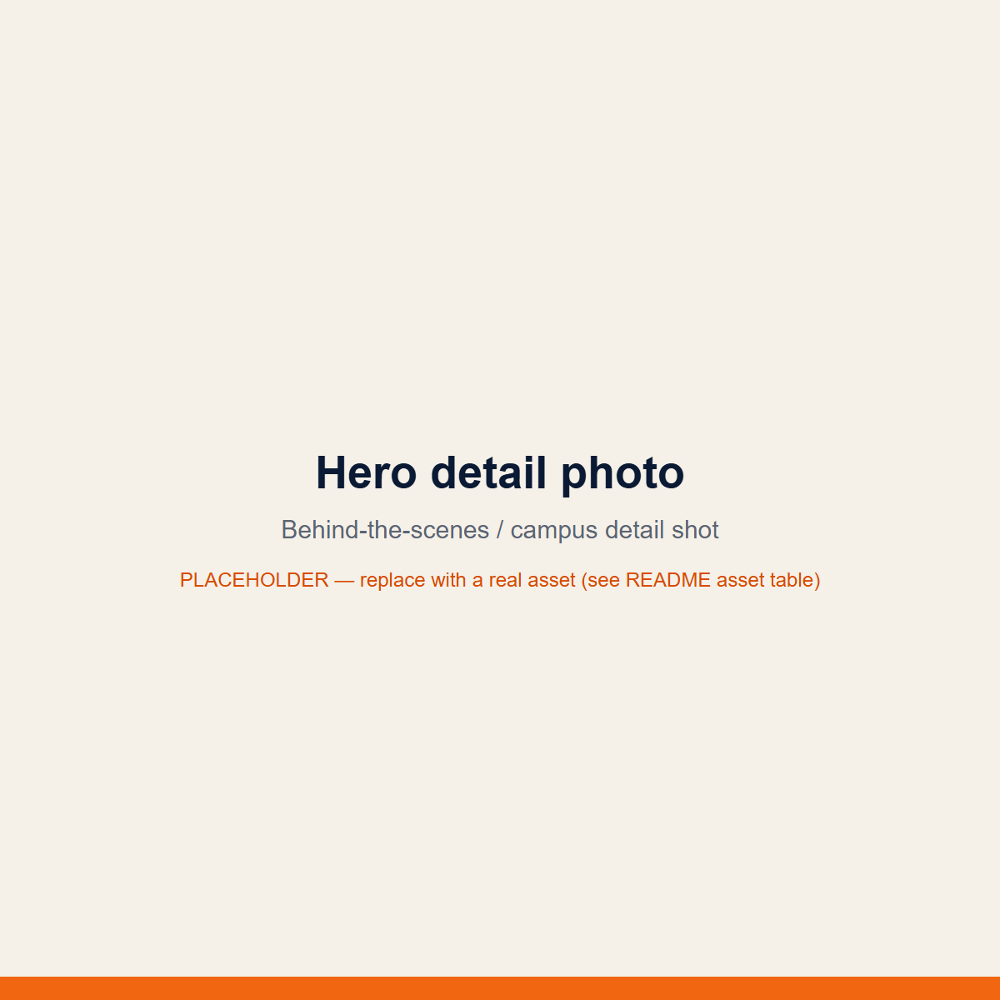
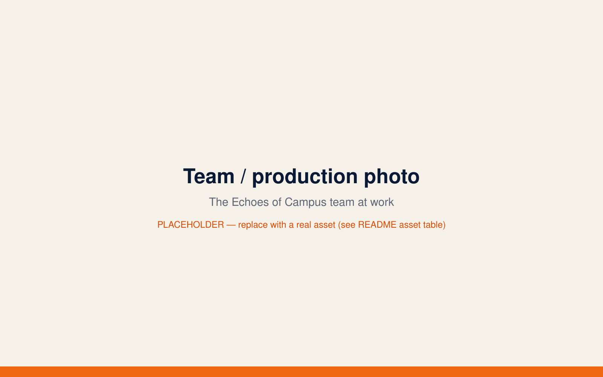

Everyone has a story. Every story needs to be heard.
Echoes of Campus listens to students at the University of Ilorin. We ask the questions that matter and bring the opinions, experiences and conversations shaping campus life out into the open.


Campus is more than lectures, deadlines and announcements. It is the people, the experiences, the opinions and the conversations that make it what it is. We listen, we ask questions, and we bring those stories into the open.
Campus Voices
Conversations worth hearing.
The first conversations are on the way.
The team is out on campus recording interviews and gathering stories. Or be part of the first wave by sharing what you think we should be talking about.
Suggest a topicWhat we cover
The formats we are building.
These are the editorial directions Echoes of Campus is built around. As real stories land, they will live under these categories.
Street Interviews
Direct conversations with students, in their own words and on their own terms.
Campus Conversations
Opinions and discussions around the topics students are actually talking about.
Campus Pulse
Developments, happenings and issues that matter within the campus community.
Personal Stories
Lived experiences and perspectives, shared with care and handled thoughtfully.
Events & Campaigns
Selected campus events and initiatives, covered by the team when they are worth your attention.
Who we are
An independent voice, listening to campus.
Echoes of Campus is a student-focused media initiative, independent of the university, built around one simple idea: students already have the stories. Our job is to make sure someone is listening, and that those stories travel further than a corridor conversation.
More about us
There’s room for your story here.
Suggest a topic, share an experience, raise a concern, request an interview or simply ask a question. The editorial team reads everything that comes in.
Share Your Voice